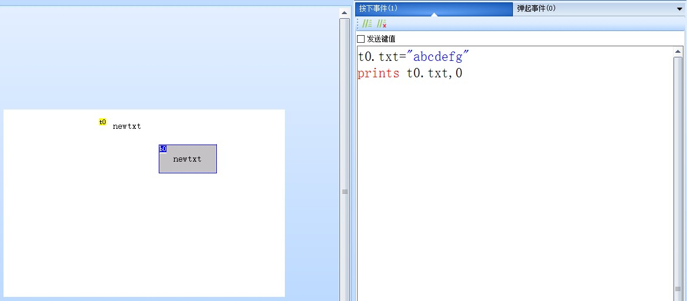
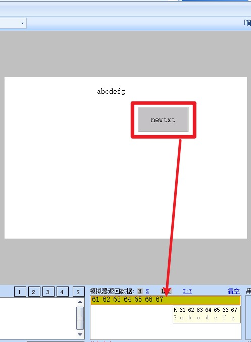
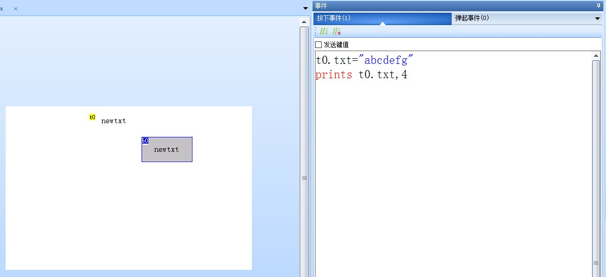
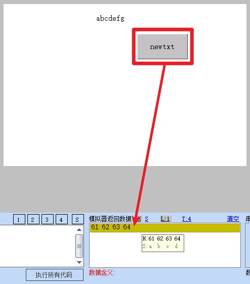
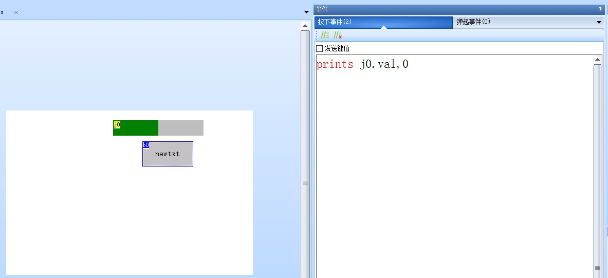
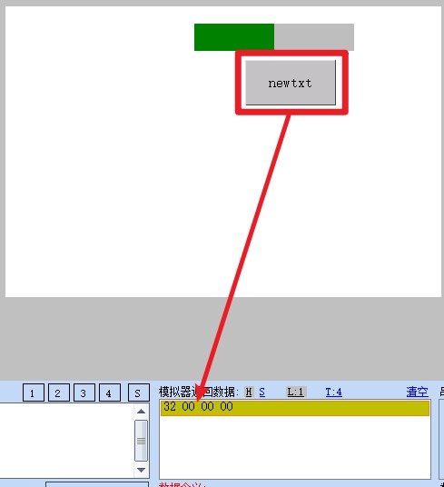
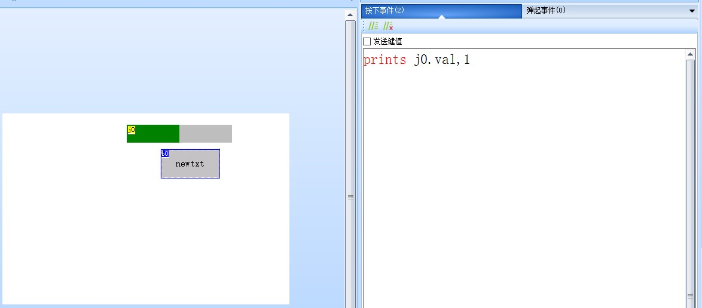
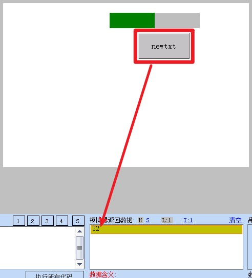

prints-从串口打印一个变量/常量
将变量/常量从串口发送出去
如果要发送固定的16进制数据请使用printh，请参考 printh-从串口打印16进制
prints att,lenth
att:变量名称
lenth:发送长度(0为自动长度)
注意
当att为数值类型时，length最大为4，length为0和length为4的效果是完全相同的。
当att为字符串类型时，length为0会发出整个完整的字符串,当length小于字符串长度时，发出指定的字节数（不是字符数），在99%的情况下，当att为字符串时，length都是为0。
prints-示例1
在按钮的按下事件（或弹起事件）中编写以下代码
t0.txt="abcdefg"
//发送控件t0的txt属性值,长度为文本实际长度，也就是发出整个文本。
prints t0.txt,0

点击调试后，点击按钮，即可发出对应的数据

prints-示例2
在按钮的按下事件（或弹起事件）中编写以下代码
t0.txt="abcdefg"
//发送控件t0的txt属性值,长度为4字节。
prints t0.txt,4

点击调试后，点击按钮，即可发出对应的数据

prints-示例3
在按钮的按下事件（或弹起事件）中编写以下代码
//发送控件j0的val属性值,默认长度为4字节整形数据，小端模式发送
prints j0.val,0

点击调试后，点击按钮，即可发出对应的数据

prints-示例4
在按钮的按下事件（或弹起事件）中编写以下代码
//发送控件j0的val属性值,长度为1字节整形数据
prints j0.val,1

点击调试后，点击按钮，即可发出对应的数据

prints-示例5
//发送常量字符串"123"即：0x31 0x32 0x33
prints "123",0
prints-示例6
//发送常量数值：123 即: 0x7b 0x00 0x00 0x00
prints 123,0
prints-示例7
//发送常量数值：123的低1字节数据 即: 0x7b
prints 123,1
prints-示例8
//发送字符串"abcdef"
prints "abcdef",0
prints-示例9
//发送中文字符串"你好哈哈"
prints "你好哈哈",0
prints-发送日期时间
//拼接字符串并发送
covx rtc0,t0.txt,0,0
covx rtc1,t1.txt,0,0
covx rtc2,t2.txt,0,0
covx rtc3,t3.txt,0,0
covx rtc4,t4.txt,0,0
covx rtc5,t5.txt,0,0
sendStr.txt=t0.txt+"年"+t1.txt+"月"+t2.txt+"日"+t3.txt+"时"+t4.txt+"分"+t5.txt+"秒"
prints sendStr.txt,0
注意
使用prints发送的变量为字符串类型时，设备直接返回字符串内码，如果是数值类型(如进度条的val属性)设备直接返回变量的4字节整形数据(Hex数据，储存方式为小端模式，即低位在前)。
使用prints指令获取数据的时候，设备仅仅只发送数据内容，没有起始标示符，也没有结束符。
prints指令可以配合printh指令在前面加一段自定义标示来告诉单片机此变量是属于哪个控件的。
prints指令和get指令很类似,区别是get发送的数据带了起始标示符（0x70或0x71）和结束符(0xff 0xff 0xff)，而prints没有,不过prints可以在后面继续用printh语句来加任何自定义标识符。
从串口打印一个Hex请使用printh，点击查看详细资料 printh-从串口打印16进制
prints指令-样例工程下载
演示工程下载链接：